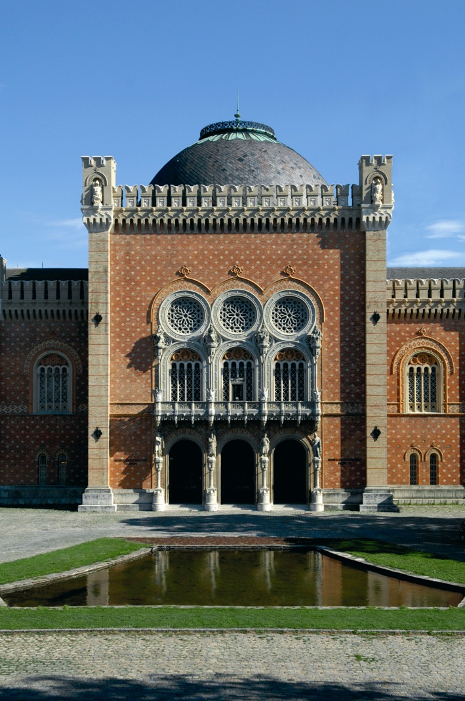
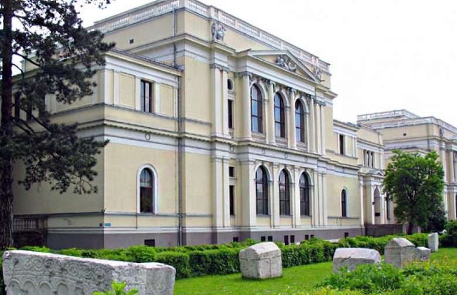
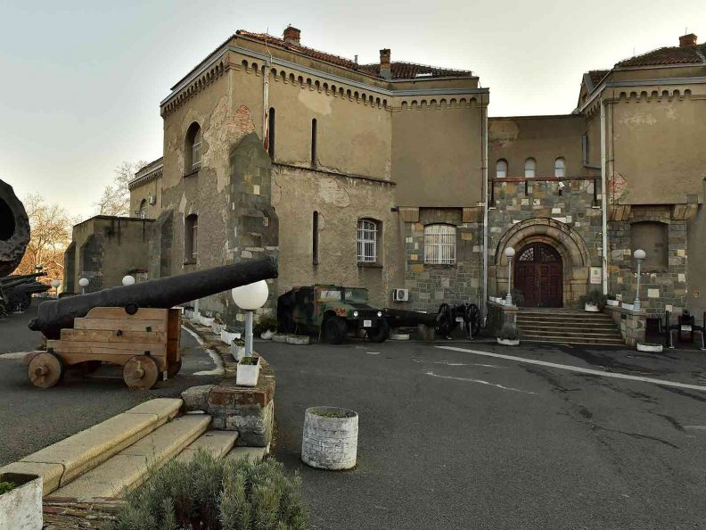
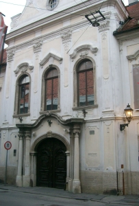
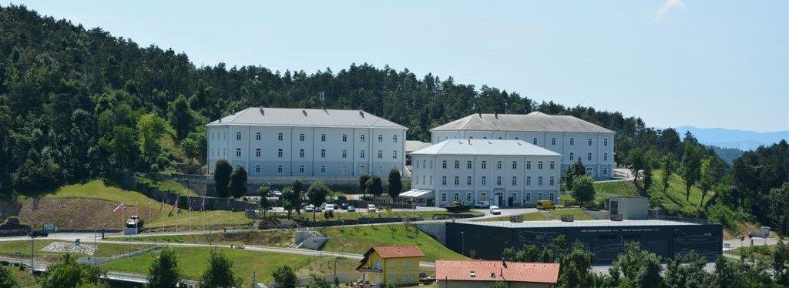
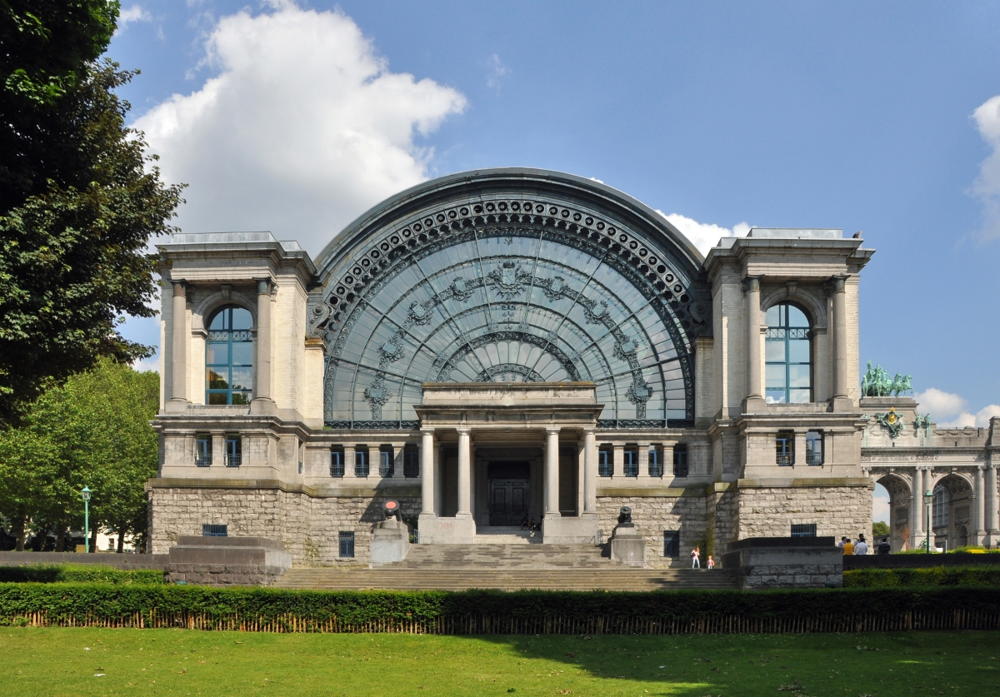
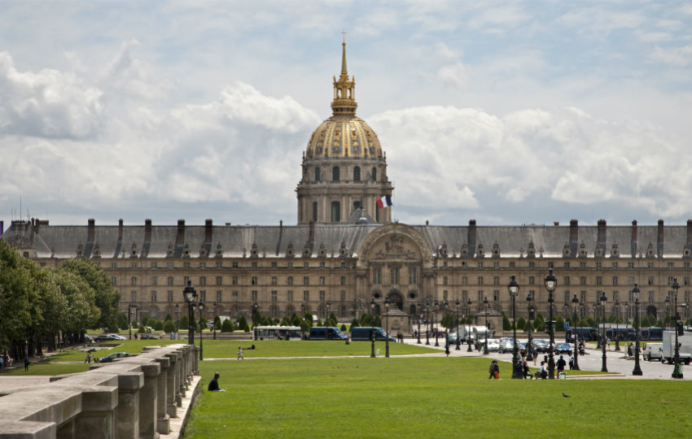

.png)
Price vojne historije
Dozivite nezaboravno iskustvo
Upoznajte historiju na potpuno novi nacin
Muzeji
Muzeji
Muzej (od starogrčkog . μουσείο[ν], musío - sjedište Muza) je naziv za ustanovu i zgradu, u kojoj se čuvaju, proučavaju i izlažu - hronološki ili tematski - zbirke starina i umjetnina, te prirodoslovnih, tehničkih i sl. predmeta. U nasem slucaju, predstavljamo Vam institucije u kojim se cuva blago vojne historije. Na listi su samo neki od muzeja u koje Vas vodimo i predstavljaju samo pocetni korak putovanja ka daljem istrazivanju i zabavi.
HGM Wien
Vojno-historijski muzej (Heeresgeschichtliches Museum) u Beču građen je po planovima Théophila Hansena, dostupan je javnosti od 1869 i jedan je od najstarijih muzeja u Becu. U njemu su prikazani eksponati iz historije austro-ugarskih i austrijskih oružanih snaga od 16. stoljeća do danas. Muzej je smješten u zgradi vojnog kompleksa poznatoj kao arsenal, prostire se na dvije etaze glavne zgrade i vanjskog artiljerijskog parka kao i parka oklopnih vozila. Izložene su zbirke od vremena Tridesetogodisnjih ratova, turske opsade Beča 1683., Francuske revolucije, Napoleonskih ratova, Prvog i drugog svjetskog rata kao i kolekcija oklopnih vozila i artiljerijskog oruzja. Muzej je smješten u Ghegastraße i Arsenalstraße.
Zemaljski muzej Sarajevo

Najveci muzej u Bosni i Hercegovini, osnovan 1888 godine, najstarija je naucna ustanova tog tipa u zemlji. U zgradi napravljenoj 1913 godine nalaze se zbirke oruzja i drugih predmeta od interesa za bogatu vojnu historiju Bosne i Hercegovine. Nadgrobni spomenici rimskih vojnika, zajedno sa oruzjem, srednjovjekovno oruzje i oklopi, zajedno sa primjercima otomanskih pistolja, sablji i drugog oruzja predstavljat ce ugodno osvjezenje za turisticku posjetu Sarajevu. Kombinujuci sa mnogobrojnim lokacijama bitaka iz samog grada Sarajeva, sigurno cete uzivati u pricama o funkcionisanju samog muzeja u ratnim uslovima. U zgradi "Historijskog muzeja" koja se nalazi u neposrednoj blizini moguce je vidjeti zbirku oruzja iz Drugog svjetskog rata kao i perioda agresije na BiH 1992-1995. S obzirom na skora ratna desavanja, u Sarajevu je moguce osjetiti i vidjeti kako rat utice na cjelokupan zivot obicnog covjeka.
Vojni muzej Beograd
Vojni muzej u Beogradu smješten je na bastionu 1. jugoistočnog fronta Beogradske tvrđave, u zgradi podignutoj 1924. godine za namjene Vojnogeografskog instituta, koja je 1956. ustupljena Muzeju. Okružen gradskim zidinama i najvećim i najljepšim beogradskim parkom, Kalemegdanom, muzej predstavlja jedan od simbola tvrđave. Bogatu historija Srbije prezentovana je kroz nekoliko zbirki i to: Arheoloska zbirka sa artefkatima od kamenog doba, Rimskog perioda, period seobe naroda, srednjovjekovnog perioda, ratovi protiv Turaka, kolekcije odlikovanja, uniformi, zastava i oruzja. Izlozba borbenih vozila i artiljerijskog oruzja definitivno cine da ovaj muzej bude na vrhu prioriteta prilikom posjete Srbiji i Beogradu.
Hrvatski povjesni muzej-Zagreb
Hrvatski povjesni muzej osnovan je 1951 godine a bastini tradiciju Narodnog muzeja osnovang 1846.godine. Ovaj muzej sadrzi zbirke predmeta od rimskog perioda do danasnjih dana. Zanimljiva je kolekcija uniformi i karata, koja uz kolekciju oruzja poznatih historijskih licnosti zasigurno predstavlja jedan od prioritetnih izbora prilikom posjete Zagrebu.
Vojni muzej Slovenskih oruanih snaga
Vojni muzej Slovenskih oruzanih snaga organizovan je u dvije organizacione jedinice. Kompleks u Mariboru sa stalnim postavkama , te kompleks parka vojne historije Pivka koji pored impresivne kolekcije oklopnih vozila i zrakoplova nudi i zanimljive sadrzaje kao sto su vojni izleti i sl. Slovenske ambicije na polju vojne historije i njegovanje kulture vojne historije definitivno odskacu od male geografske povrsine te simpaticne Balkanske drzave. Definitivno nase preporuke.
Kraljevski muzej Oruzanih snaga i vojne historije- Brisel
Belgija kao mala zemlja predstavlja jedno veliko ratiste Evrope, gdje su se odigrale neke najznacajnije bitke u historiji covjecanstva. Bitka na Sabisu, Bitka kod Walcourta i Flerusa, Waterloo, Opsada i bitka Ipra i Lijeza, Bitka u Ardenima su samo neke od mnogobrojnih bitaka koje su se odigrale na Belgijskom tlu. Zato Belgiju nazivaju "ratistem Evrope" jer ne postoji niti jedan veci sukob u historiji Evrope da nije obuhvatio i tlo Kraljevine Belgije. Zbog toga Belgija ima bogatu historijsku bazu za proucavanje vojne historije a nas prijedlog je da se pocne od Kraljevskog muzeja Oruzanih snaga i vojne historije. Osnovan 1910, a od 1923. premjesten na danasnju lokaciju, njegove postavke nam pruzaju uvid u bogatu vojnu historiju. Kroz stalne postavke oruzja i vojne opreme od 14 stoljeca do danasnjih dana, posjetioci imaju osjecaj putovanja kroz vrijeme u neka strasnija i nesigurnija vremena koja su oblikovala svijet u kome danas zivimo.
Muzej armije-Pariz
Francuska kao jedna od vodecih vojnih sila kroz historiju moze se pohvaliti najboljim vojnim muzejom u Evropi a mozda i sire. Lociran na 7 arondismanu u Les Invalides, otvoren je 1905 godine za javnost. Bogata kolekcija antickog oruzja cini ga jednim od top 3 muzeja u svijetu. Samo nabrojati artefakte ovog muzeja trebalo bi nam vise od cijelog dana, zato Vas toplo pozivamo da ga posjetite i dozivite once in a lifetime, nezaboravno, iskustvo.